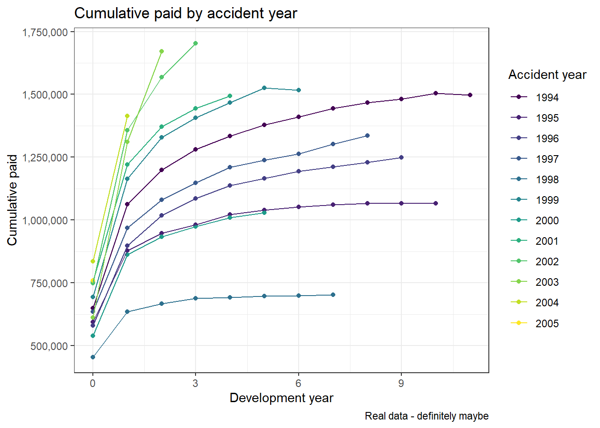
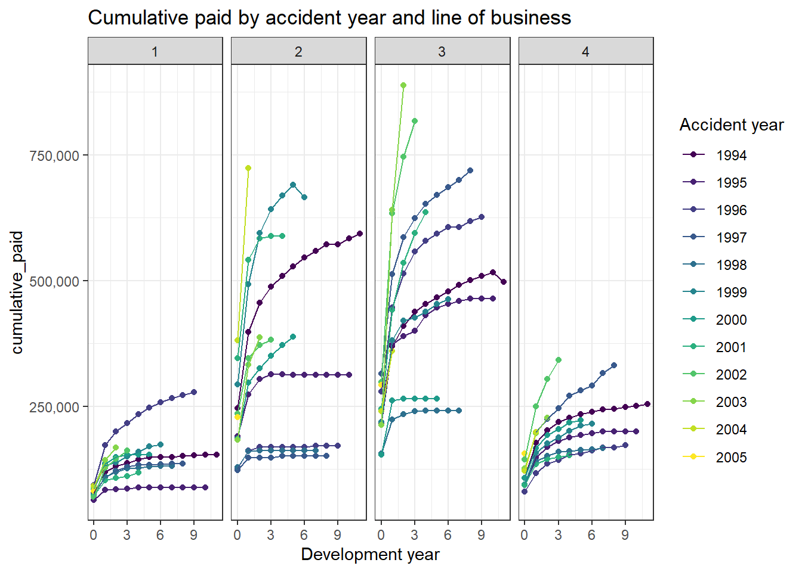
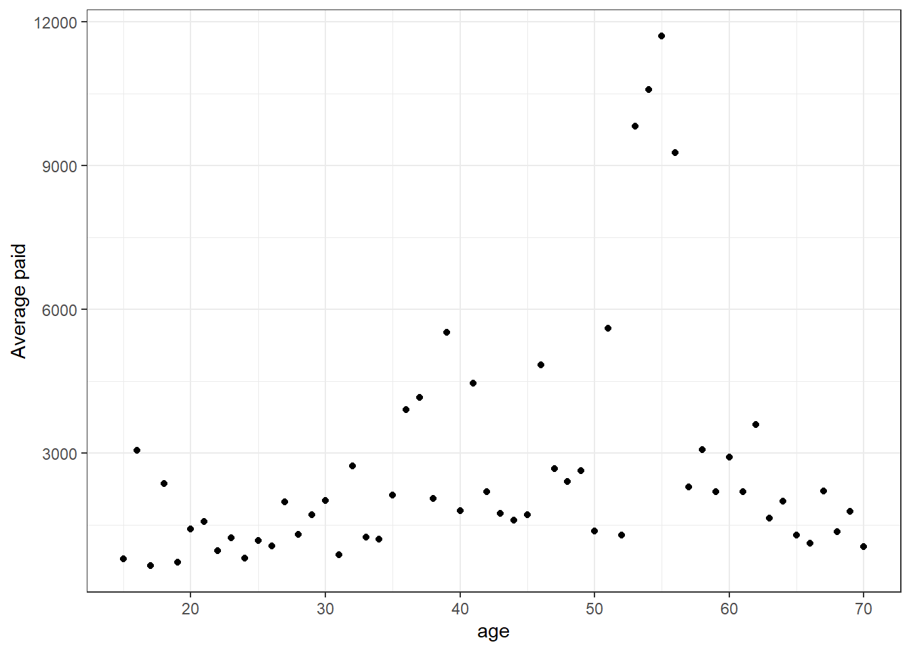

8 Data Maker - simulating data with simulationmachine
Post originally by John McCarthy https://institute-and-faculty-of-actuaries.github.io/mlr-blog/post/simulationmachine/
8.1 The right time
If you build a polygon from rods and hinges, what is the only shape to hold firm when you push on the edges? It is a triangle. Our three sided friend is everywhere in construction - look out the next time you walk past a pylon or bridge. We can think of the triangle as the shape’s shape; irreducible, and good for approximating other shapes e.g. computer graphics represent complex surfaces by covering them in a mesh of small triangles and zooming out. In the world of insurance, if you zoom out far enough, individual claims data morphs into the familiar development triangle. The development triangle has the effect of watering claims data down into a thin porridge: any ten-year annual paid history - whether your portfolio contains dozens of claims or millions - is diluted to just 55 numbers for a reserve study. All fine for chain ladder methods, with a small appetite for bumps and edges, but machine learning algorithms are data hungry. If we want to test the full range of machine learning methods available then we need to start to zoom in on the triangle.
Many actuaries can now source transactional data from tools managed by their employers, but this poses two problems:
Company data cannot be released into the public domain for others to use, so the company actuary is unable to share the details of her research with outsiders.
It is not unheard of for company data to contain errors. It is more difficult to probe the pros and cons of a data-driven technique if the input has missing values, accident dates that occur after reporting dates, large positive and negative dummy transactions that offset, or other fun and amusing diversions. Of course, reserving is chiefly a practical data exercise and at some point this means machine learning cannot demand perfect data from the actuary. However, perhaps there are interesting questions to be answered first.
8.2 Make along with me
Fortunately for those interested in applying machine learning to a reserving context, Gabrielli and Wüthrich (2018) have released an infinite supply of polished datasets using a simulation approach set out in a 2018 paper.
Briefly, they have built a tool in the R environment which mimics a company dataset containing twelve years of history for about ten million claims.
The data is generated at a claim level and includes the paid amount each year in addition to non-financial features. For example, the data includes factors for claim code and line of business, and the machine allows some assumptions to be varied at whim.
Kuo (2019) has helpfully gift-wrapped the simulation machine in an R package that allows us to easily generate simulation outputs.
Let’s look at some example code below.
First of all, the package is not on CRAN so it must be installed from github as follows:
##
## Attaching package: 'scales'## The following object is masked from 'package:viridis':
##
## viridis_palThe paper describes the simulation approach in full mathematical detail. Here we just give a brief description of some of the less obvious fields:
| Field | Description |
|---|---|
| report_delay | Difference between reporting date and occurence date in years |
| lob | Line of business (1 - 4) |
| cc | Claim code factor |
| age | ..of claimant (15 - 70) |
| injured_part | Factor coding body part injured |
| claim_status_open | Is the claim open at the end of the development year? |
Here is a quick look at some data snipped from the top of the table:
## claim_id accident_year development_year accident_quarter report_delay lob cc age injured_part paid_loss claim_status_open
## 1: 1 1994 0 4 0 2 6 42 36 0 1
## 2: 1 1994 1 4 0 2 6 42 36 0 0
## 3: 1 1994 2 4 0 2 6 42 36 0 0
## 4: 1 1994 3 4 0 2 6 42 36 0 0
## 5: 1 1994 4 4 0 2 6 42 36 0 0
## 6: 1 1994 5 4 0 2 6 42 36 0 0Pulling up a data summary is more useful and easy to do in R:
## claim_id accident_year development_year accident_quarter report_delay lob cc age injured_part
## Length:120036 Min. :1994 Min. : 0.00 Min. :1.000 Min. :0.00000 1:30636 17 :14124 Min. :15.00 36 :17412
## Class :character 1st Qu.:1997 1st Qu.: 2.75 1st Qu.:2.000 1st Qu.:0.00000 2:29724 6 :10092 1st Qu.:24.00 51 :10824
## Mode :character Median :2000 Median : 5.50 Median :3.000 Median :0.00000 3:29748 31 : 6936 Median :34.00 12 : 8412
## Mean :2000 Mean : 5.50 Mean :2.507 Mean :0.09157 4:29928 19 : 6648 Mean :35.02 53 : 8328
## 3rd Qu.:2003 3rd Qu.: 8.25 3rd Qu.:4.000 3rd Qu.:0.00000 47 : 5220 3rd Qu.:44.00 35 : 6900
## Max. :2005 Max. :11.00 Max. :4.000 Max. :9.00000 45 : 4560 Max. :70.00 54 : 4920
## (Other):72456 (Other):63240
## paid_loss claim_status_open
## Min. :-43525.0 Min. :0.00000
## 1st Qu.: 0.0 1st Qu.:0.00000
## Median : 0.0 Median :0.00000
## Mean : 146.1 Mean :0.09481
## 3rd Qu.: 0.0 3rd Qu.:0.00000
## Max. :292685.0 Max. :1.00000
## Observations:
- There are 120,036 rows, close to the expected number (10,000 expected claims x 12 years of annual paid history = 120,000 rows)
- Note - the simulation still generates an annual paid of 0 and sets claim_status_open = 1 for the years prior to the claim being reported
- Claims are usually reported within a year of occurrence
- Age ranges from 15 to 70 and averages 35
- Accident year and development year have the ranges we expect
- Paid is nil most of the time
- The claims are evenly allocated to the four lines of business, as we expect
- The most common injured_part and cc take up c. 10% - 15% of the data
A glance at the classic paid development chart reveals a pattern that looks fairly typical:

It is straightforward to go beyond the basic chart and plot the paid in finer detail - here by line of business:

Next we can create a claim level summary of total paid, analyse the size distribution, and see how much average paid varies with LOB, age and reporting delay:
## claim_id lob age report_delay paid value_band
## Length:10003 1:2553 Min. :15.00 Min. :0.00000 Min. : 0.0 (-Inf,0] :2842
## Class :character 2:2477 1st Qu.:24.00 1st Qu.:0.00000 1st Qu.: 0.0 (0,100] : 345
## Mode :character 3:2479 Median :34.00 Median :0.00000 Median : 278.0 (100,1000] :4710
## 4:2494 Mean :35.02 Mean :0.09157 Mean : 1752.8 (1000,10000] :1914
## 3rd Qu.:44.00 3rd Qu.:0.00000 3rd Qu.: 787.5 (10000,100000]: 168
## Max. :70.00 Max. :9.00000 Max. :799159.0 (100000, Inf] : 24The paid by claim is characterised by lots of low value claims occasionally distorted by larger claims - the nil rate is around 28% and the third quartile is under half the value of the mean. Possibly we would want to consider modelling the nil claims and claims over 100k separately.
## report_delay average_paid claim_count
## 1: 0 1831 9146
## 2: 1 920 827
## 3: 2 510 18
## 4: 3 519 6
## 5: 4 5952 2
## 6: 5 1545 2
## 7: 8 0 1
## 8: 9 0 1The relationship here is unclear as around 90% of claims have a reporting delay of 0.
## lob average_paid num_claims
## 1: 1 784 2553
## 2: 2 2050 2477
## 3: 3 2936 2479
## 4: 4 1273 2494The average cost appears to vary by lob. This could be helpful information and lead to tracking the underlying lob mix, or possibly analysing the lobs separately.

The average paid appears to increase up to around the age of 50. The values for ages around 55 may be worthy of further investigation, or just a small number of high value claims causing distortion.
8.3 Little by little
This post has introduced an R package for accessing the Gabrielli and Wüthrich claims simulation machine and looked at one example simulation. The machine has obvious uses as a potential dartboard for comparing the accuracy of various machine learning and reserving methods, and as a playground for honing your R reserving skills. The charts and summaries presented here serve as a prompt for further analysis. Enjoy!